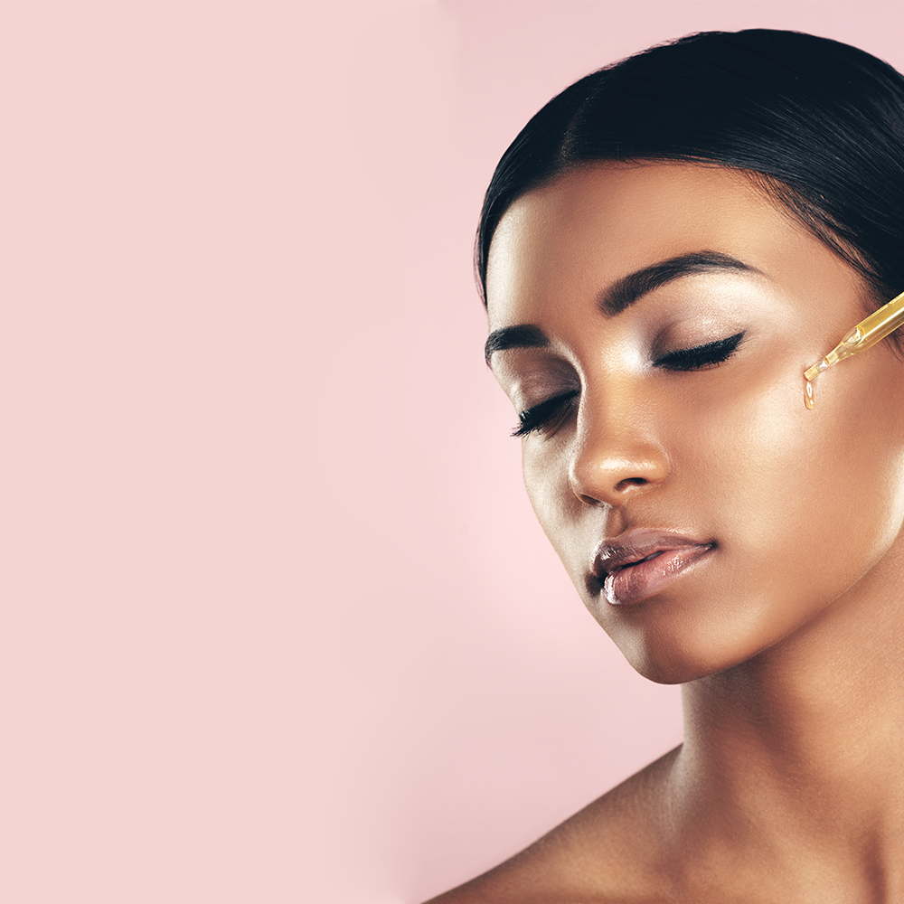

Published on January 9, 2024
Discover the Latest Trends
We know that these beauty products aren’t always attainable, but the means for self-care should be accessible to all. So, when you pre-order a Get One, Give One Lucky Bag, you’ll get one Lucky Bag and we’ll donate the second one to an organization that serves the San Francisco Bay Area community and beyond.

Skincare Routine for Radiant Skin
There’s been a big (and much needed) push in the last few years to more natural makeup looks, and supporting no makeup altogether. This movement has led to more women showing off their natural and glowing complexions. If you’ve been wondering what these women are doing to have such glowing skin, keep reading to learn the glowy skincare routine – because it’s easy to have beautiful and glowing skin, from home!
Learn effective skincare routines to achieve a glowing complexion.
"Beauty is power, and makeup is something that really enhances that; it's a woman's secret." - Charlotte Tilbury